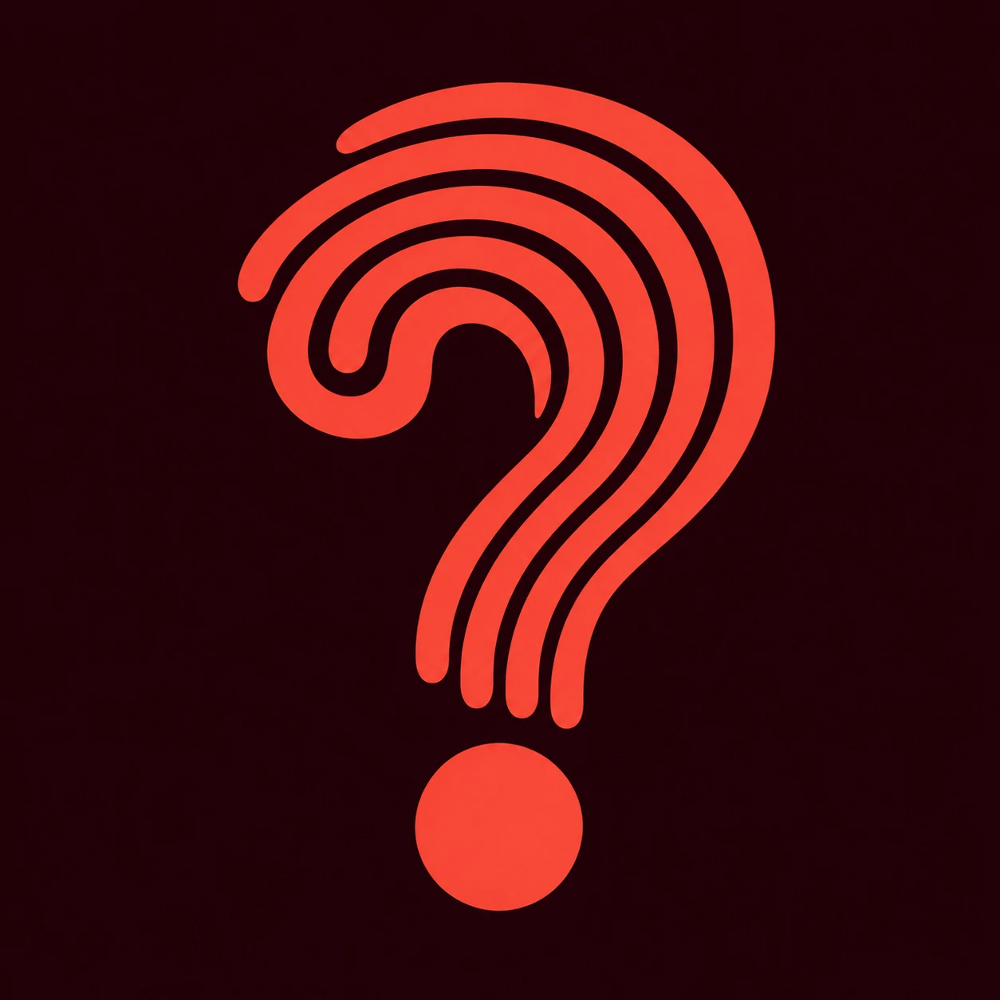

01 / MOBILE GAME
Small blocks.
Big possibilities.
BLOCK BLUUP
A colorful puzzle game about finding the right fit. Place pieces, clear rows and columns, and leave a little room for your next move.
Explore on Google Play
INDEPENDENT MAKER. ENDLESSLY CURIOUS.
Hi, I’m Emirhan. I make games to get lost in, tools to make things easier, and stories that make you look closer.
A few different interests. A lot of making.
Block Bluup ↗
02 / WONDER
GECEBlock Bluup — a little room to play.
A FEW THINGS I’VE BEEN MAKING / 01
A game, a storytelling project and a tool for playing together. Come take a look.
01 / MOBILE GAME
BLOCK BLUUP
A colorful puzzle game about finding the right fit. Place pieces, clear rows and columns, and leave a little room for your next move.
Explore on Google Play02 / STORYTELLINGIN TURKISH
GECE DOSYASI
History, legends and the questions they leave behind. A Turkish video storytelling project that brings the curious, the forgotten and the unexplained into focus.
Open the archive03 / OPEN-SOURCE TOOL
KALRADYA CO-OP
A Windows companion for Bannerlord co-op. Prepare your server, connect with friends and manage your saves, with a simpler place to start.
Explore on GitHubTHE PERSON BEHIND THE PROJECTS / 02
I’m Emirhan Gürkan.
A maker with a few different worlds.
Sometimes I’m building a game. Sometimes it’s a practical tool. And sometimes I’m following a story to see where it leads.
I work with Unity, C# and web technologies, and bring the same curiosity to Gece Dosyası. I enjoy the whole process: asking questions, making things, and finding the details that make them feel right.
GOOD THINGS START WITH A HELLO / 03
Have a thought about a project or just want to follow along? You’ll find me here.